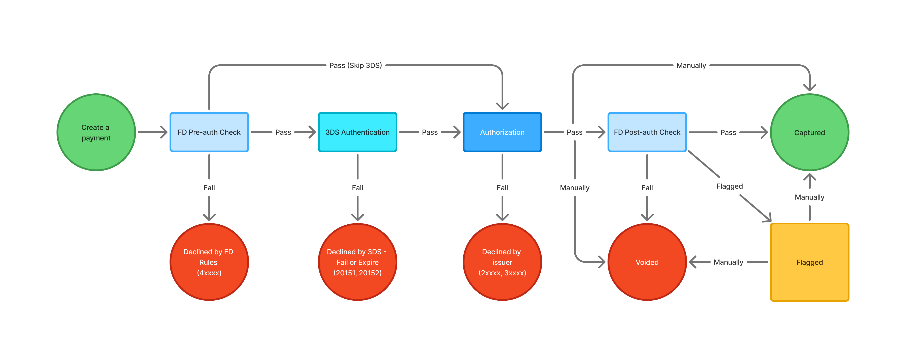
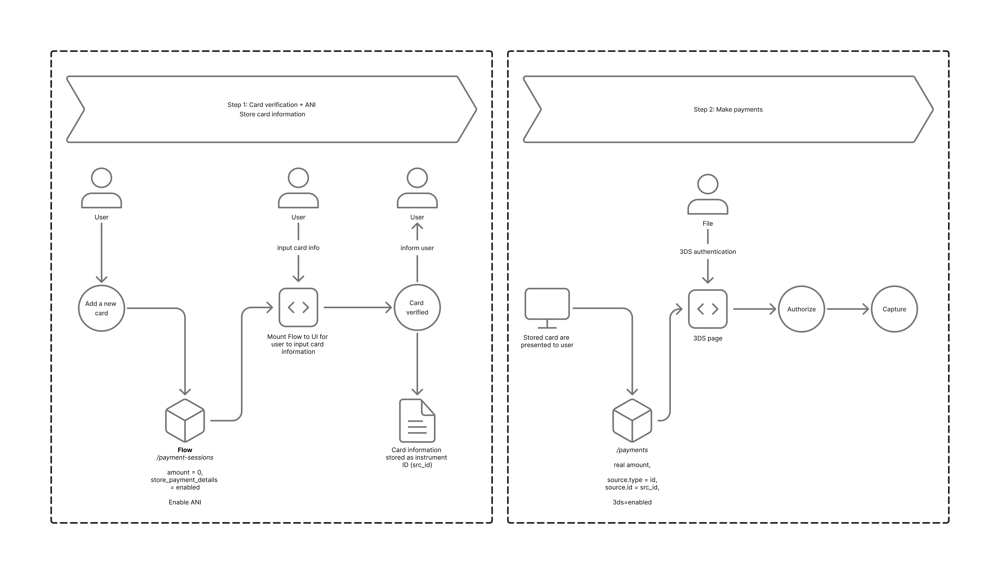

Payin
Accept payments from your customers — the payment lifecycle, integration options, and the tools around them.
Payment Lifecycle
A payment moves through fraud checks, authentication, authorization, and capture. This diagram shows the full flow and where a payment can be declined, voided, or flagged.
{kind=link}

Integration
Choose the integration that fits your PCI compliance level and your build.
Flow & Remember Me
Flow is a pre-built, customizable payment user interface that you can embed directly into your website. It enables you to accept payments using Checkout.com's global network of payment methods with a single integration.
Try the live demo
The Remember Me feature enables customers to save their card details during checkout. The next time the customer shops at any merchant that has Remember Me enabled, we display their saved card details.
Store Card Solution
Use Flow to verify the customer's card, then securely store the validated card credentials for subsequent payments — such as recurring billing, subscriptions, and one-click checkout.
{kind=link}

Full Card API
If your level of PCI compliance is SAQ D, you can request a payment using the card's full details.
Checkout.com provides a collection of APIs that enable you to process and manage payments.
Mobile SDKs
Checkout.com offers back-end and mobile SDKs for Android and iOS.
Amount Format
Our payment gateway determines the charge amount by assessing the value and the currency contained in the charge request. The amount field in a payment request must be a non-zero positive integer — no decimals. Details here.
Account Name Inquiry (ANI)
To reduce fraud risk, you can validate a cardholder's name against the name held by their issuing bank using an Account Name Inquiry (ANI). ANI is a card verification service that works independently of the financial transaction.
Good Practice
To improve acceptance rates and enhance risk control, Checkout.com requires merchants to provide the following information when submitting payment and/or payment session requests:
- cardholder name
customer.emailcustomer.namecustomer.phone(good to have)billing.address.countrybilling.address.address_line1billing.address.citybilling.address.state(for US)billing.address.zip(good to have)risk.device.network.ipv4orrisk.device.network.ipv6risk.device_session_id
Account Funding Transactions (AFTs)
Card schemes (Visa & Mastercard) have mandates to ensure that acquirers/merchants with specific MCCs are migrated to AFTs. CKO will help merchants to apply for AFT enablement with schemes. To flag transactions as AFTs, please follow the docs here.
APMs
Checkout.com provides a wide range of global Alternative Payment Methods (APMs), such as Apple Pay, Google Pay, and local payment methods, etc. Please contact our team for more information.
Dashboard
The Dashboard is your single source for monitoring and analyzing all your payments. Get your key performance indicators, payment history, details and analytics — all in one place. You can also manage Disputes, Reports, Settlements, and Risk strategies from the Dashboard.
Webhook
Checkout.com can send you automated notifications when events related to your account occur. You can receive notifications using Webhooks or EventBridge for all event types.
Response Code
A Response Code is a five-digit numeric code that indicates the status of the request. Here are the four types:
The request was successful.
The request was declined, usually by the issuer bank, though subsequent attempts may be successful.
The request was declined. Most hard declines require the issuer or cardholder to rectify the outstanding issue(s) before a subsequent attempt can be made.
The request triggered a risk response. The status of the response will depend on the action specified in your risk settings. Declined by Fraud Detection.